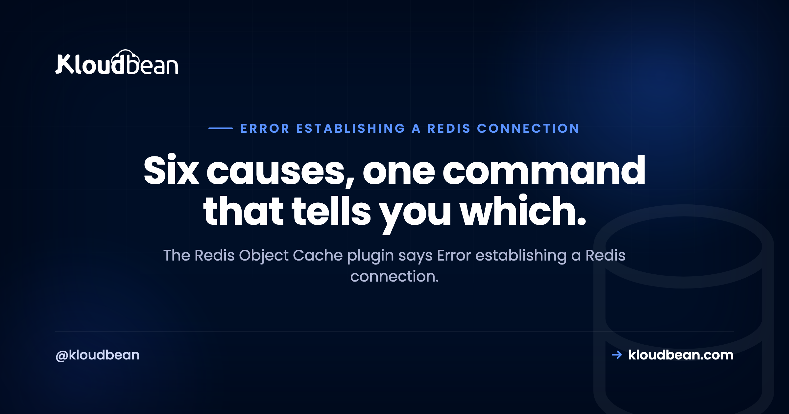

Error Establishing a Redis Connection: How to Diagnose and Fix It

If you are reading this you have probably just opened Settings then Redis in WordPress and seen "Error establishing a Redis connection" where you wanted "Connected". Most people meet this message through the Redis Object Cache plugin, though the same wording appears in other object-cache plugins and the underlying causes are identical for a Node or PHP app connecting to Redis directly. The message itself tells you nothing useful, so this guide starts with the one command that narrows it down, then works through the six real causes in order of likelihood.
Run redis-cli ping on the server first. If you do not get PONG, Redis is not running or not reachable, so start it or fix the host and port. If you do get PONG, the service is fine and the problem is in your configuration: a missing password, the wrong host or port in wp-config.php, a missing PHP redis extension, the wrong scheme for a socket connection, or a memory policy refusing writes. Check them in that order.
Start here: is Redis actually answering?
This single test splits the problem in half, and it is worth doing before changing any configuration. On the server, run:
# Is Redis running and answering locally?
redis-cli ping
# expected: PONG
# If Redis is on another host or a non-default port
redis-cli -h 10.0.0.5 -p 6379 ping
# If Redis requires a password
redis-cli -h 10.0.0.5 -p 6379 -a 'your-password' pingThree possible outcomes, and each points somewhere different. PONG means the service is healthy and your problem is configuration. Connection refused means nothing is listening there, so Redis is down or you have the wrong host or port. NOAUTH Authentication required means Redis is running perfectly and your credentials are missing, which is genuinely good news because it is a one-line fix.
Cause 1: Redis is not running
The most common cause, especially after a server reboot or an update. Check and start it:
sudo systemctl status redis-server # or: redis
sudo systemctl start redis-server
sudo systemctl enable redis-server # so it survives a rebootThat last line matters more than people expect. A Redis that was started manually and never enabled will come back down at the next reboot, and the cache will silently fail until someone notices the page got slower.
Also worth ruling out: on some shared hosting plans Redis is simply not available. If redis-cli is not installed and you have no way to install it, the plugin cannot connect because there is nothing to connect to, and no amount of configuration will change that. This is the point where the hosting model decides the answer for you. Redis is one of seven managed engines you can launch on Kloudbean (MySQL, MariaDB, PostgreSQL, Redis, Memcached, Elasticsearch, MongoDB), so it's a resource you add rather than a feature you hope your plan includes, and whether it comes back up after a reboot isn't a thing you have to remember.
Cause 2: wrong host or port
If redis-cli ping works on the server but the plugin still fails, compare what the plugin is told against where Redis actually listens. In WordPress that means the constants in wp-config.php, which must go above the line that requires wp-settings.php:
define( 'WP_REDIS_HOST', '127.0.0.1' );
define( 'WP_REDIS_PORT', 6379 );
define( 'WP_REDIS_DATABASE', 0 );
define( 'WP_REDIS_TIMEOUT', 1 );
define( 'WP_REDIS_READ_TIMEOUT', 1 );Confirm the port Redis is really bound to, and the address it accepts connections on:
ss -tlnp | grep redis
grep -E '^(bind|port|requirepass|maxmemory)' /etc/redis/redis.confA frequent trap after a migration: wp-config.php still names the old server's Redis host. The site loads, the cache quietly fails, and nobody connects the two until performance is investigated weeks later.
Cause 3: a password Redis wants and the plugin does not send
If redis-cli ping returns NOAUTH Authentication required, Redis has requirepass set and your client is not authenticating. Add the password:
define( 'WP_REDIS_PASSWORD', 'your-redis-password' );For a managed Redis instance you will usually be given a full connection URL, in which case the scheme, host, port, and credentials all need to match what the provider issued. If the instance requires TLS, a plain connection will fail even with the right password, so check whether you need rediss:// rather than redis://. Managed Redis on Kloudbean works this way too: you take the host, port, and credentials from the dashboard, and you whitelist your app server's IP on the instance so that server is the only address allowed to authenticate at all. Copy the values, don't retype them. A trailing space in a pasted password produces the exact same NOAUTH you started with.
Cause 4: the PHP redis extension is missing
This one confuses people because Redis is running, the credentials are right, and it still will not connect. The reason is that PHP needs a client library to speak the protocol at all. Check whether the extension is present:
php -m | grep redis
php -i | grep -i "redis"If nothing comes back, install the phpredis extension for your PHP version and restart PHP-FPM. Some plugins can fall back to a pure-PHP client such as Predis, which works but is slower, so the extension is the better answer for a cache whose whole purpose is speed. And remember that upgrading PHP can leave the extension behind, which is why this failure sometimes appears immediately after a PHP version change rather than after a Redis change.
Cause 5: socket versus TCP mismatch
Redis can accept connections over a TCP port or a Unix socket, and the two need different configuration. If your Redis is set up for a socket, pointing the plugin at a host and port will fail even though everything is running. For a socket connection:
define( 'WP_REDIS_SCHEME', 'unix' );
define( 'WP_REDIS_PATH', '/var/run/redis/redis.sock' );Confirm the socket path from your Redis configuration rather than guessing it, and confirm the web server user can actually read it. A socket with permissions that exclude the PHP process produces a connection failure that looks identical to Redis being down.
Cause 6: memory full with the wrong eviction policy
The subtlest one, and it usually appears after weeks of normal operation rather than at setup. If Redis hits its maxmemory limit while maxmemory-policy is set to noeviction, it starts refusing writes instead of discarding old keys. Depending on the client, that surfaces as connection or write errors rather than a clear out-of-memory message.
redis-cli info memory | grep -E 'used_memory_human|maxmemory_human|maxmemory_policy'
redis-cli config get maxmemory-policyFor a cache, noeviction is the wrong choice. A cache should be allowed to forget things:
redis-cli config set maxmemory-policy allkeys-lru
# then persist it in redis.conf so it survives a restart
My honest opinion: if you are using Redis purely as an object cache, allkeys-lru should be the default you set on day one. Leaving it at noeviction turns a full cache into an application error, which is exactly backwards for something that is supposed to be optional.
Notice who owns this bug. It lives in redis.conf, not in your application, so it belongs to whoever runs the box. On a VPS you own that file, including remembering that a config set evaporates at the next restart unless you persist it. On a managed instance, like the ones in the Kloudbean dashboard, the server config and its survival across restarts sit on the provider's side of the line, and the instance is backed up on a schedule you didn't have to write. What stays yours either way is the decision about how much memory the cache should have.
| What you see | Cause | Fix |
|---|---|---|
redis-cli ping fails, connection refused | Redis down or wrong host/port | Start and enable Redis, verify bind and port |
NOAUTH Authentication required | Password not configured in the client | Set the password constant |
| PONG works, plugin still fails | Wrong host, port, or scheme in config | Match config to the real listener |
| Everything correct, still no connection | PHP redis extension missing | Install phpredis, restart PHP-FPM |
| Broke right after a PHP upgrade | Extension not carried over | Reinstall for the new PHP version |
| Worked for weeks, then failed | maxmemory reached, noeviction | Set allkeys-lru |
| Broke right after a migration | Old Redis host in config | Update to the new host |
Verifying the fix
Do not trust the plugin's status page alone. Confirm that keys are actually being written:
# Watch key count while you load a few pages
redis-cli info keyspace
# Or confirm the object cache is doing something
redis-cli --statA connected plugin with an empty keyspace means something is still wrong, usually a database index mismatch or a drop-in file that was not installed. If you use WP-CLI, wp redis status gives you the plugin's own view, which is useful to compare against what redis-cli reports.
If you are connecting from Node rather than WordPress
The causes are the same minus the PHP extension. A Node client failing to reach Redis usually surfaces as ECONNREFUSED, which is the same diagnosis path: confirm the service answers, then check the host, port, and credentials your app is actually using. Our ECONNREFUSED guide covers that in detail, including the localhost trap where code works locally and fails in production because the database or cache is on a separate host. If you are using Redis as a queue backend, background jobs with BullMQ covers the connection settings that library expects.
The fix that appears to work and shouldn't be used: binding Redis to 0.0.0.0
Search this error for long enough and you'll find the shortcut. Edit redis.conf, change bind 127.0.0.1 to bind 0.0.0.0, turn off protected-mode, restart. The plugin flips to "Connected" and the problem looks solved.
Here's the mechanism that makes it a bad trade. Redis was designed to sit on a trusted network, and by default it answers any client that reaches it. So the moment it listens on a public interface, the only thing between your cache and the internet is whether you also set requirepass, and Redis auth is a single shared password with no rate limiting or lockout in front of it. Port 6379 gets swept the same way port 22 does. An open Redis isn't just readable, it's writable, and a writable cache in front of a CMS is a code-execution path, not a data leak. You didn't fix a connection error. You moved it into a security incident with a delay on it.
The correct version of that same fix is to keep the bind address narrow and change what's allowed to reach it. If the app and Redis are on one box, loopback or a Unix socket is the whole answer and you never needed a public bind. If they're on different hosts, restrict by address: allow your application server and nothing else. On Kloudbean's managed Redis, that's IP allow-listing on the instance, so the cache is reachable from your app server's address and refuses everything else, with the credentials handed to you rather than invented. That's the same idea a competent VPS setup reaches by hand, minus the chance of a forgotten 0.0.0.0 surviving in a config file for a year.
Some of this no host can do for you, ours included. Nobody can stop you from editing redis.conf on a server you control, and no platform makes a wrong WP_REDIS_HOST right or installs a PHP extension you never asked for. The line is roughly this: causes 1, 2 and 6 are about who runs the service, and a managed instance takes those. Causes 3, 4 and 5 are configuration inside your application, and those stay with you no matter where the cache runs.

More on error Establishing a Redis Connection
For the caching side, see managed Redis hosting, the Redis caching guide, and Redis caching patterns. To decide whether Redis is even the right tool, when to use Redis vs Postgres and Redis vs Memcached. On the WordPress side, how to clear WordPress cache.
Let the cache be someone else's uptime problem.
Launch managed Redis in the same dashboard as your site or app, right next to it with a supplied connection string, locked to your app server's IP, backed up automatically, on a flat plan from $8/mo. Free migration assistance included. Start at kloudbean.com.
Managed Redis · Automatic backups · One dashboard · Flat from $8/mo
FAQ
What causes 'Error establishing a Redis connection'?
Six things, in rough order of likelihood: Redis is not running, the host or port in your configuration is wrong, Redis requires a password your client is not sending, the PHP redis extension is missing, you have a socket versus TCP mismatch, or Redis has hit its memory limit with an eviction policy of noeviction. Running redis-cli ping first tells you which half of the list to look at.
How do I test whether Redis is reachable?
Run redis-cli ping on the server and expect PONG. Add -h and -p for a remote host or non-default port, and -a for a password. Connection refused means nothing is listening; NOAUTH Authentication required means Redis is healthy and only your credentials are missing.
Why does Redis Object Cache say not connected when Redis is running?
Usually a configuration mismatch or a missing client library. Check that WP_REDIS_HOST, WP_REDIS_PORT, and any password match where Redis actually listens, that the constants sit above the wp-settings.php require line in wp-config.php, and that php -m | grep redis shows the extension. A missing phpredis extension is the cause people overlook most.
Why did Redis stop working after a PHP upgrade?
Because the phpredis extension is compiled against a specific PHP version and is not always carried across an upgrade. Check with php -m | grep redis, reinstall the extension for the new version, and restart PHP-FPM. The timing is the giveaway: nothing changed about Redis, so look at PHP.
Can a full Redis cause connection errors?
Yes, indirectly. If Redis reaches maxmemory while maxmemory-policy is noeviction, it refuses writes rather than evicting old keys, and clients often report that as a connection or write failure. For a cache, set allkeys-lru so Redis discards the least recently used keys instead of erroring.
Should Redis be exposed to the internet to fix this?
No. Binding Redis to a public address to make it reachable is a common and dangerous shortcut, since Redis is designed to run on a trusted network. Keep it reachable only from your application, use a password, and if you genuinely need a remote connection use TLS. A managed instance locked to your app server's IP gives you this by default.